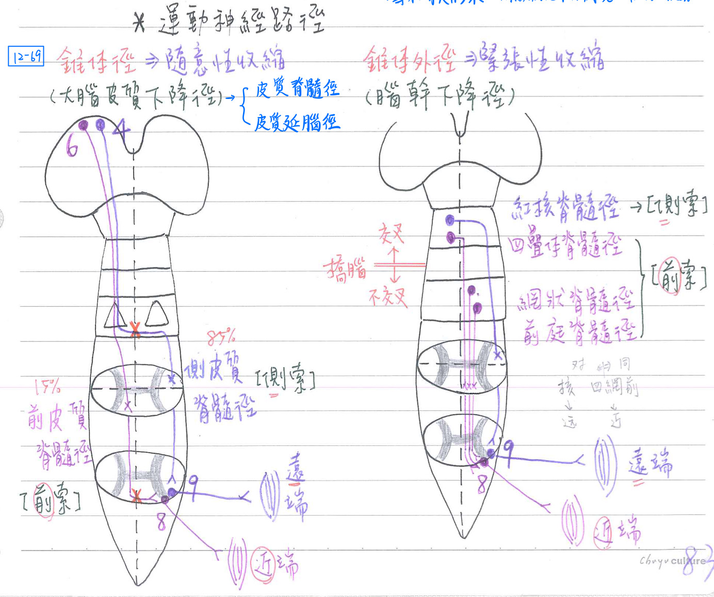
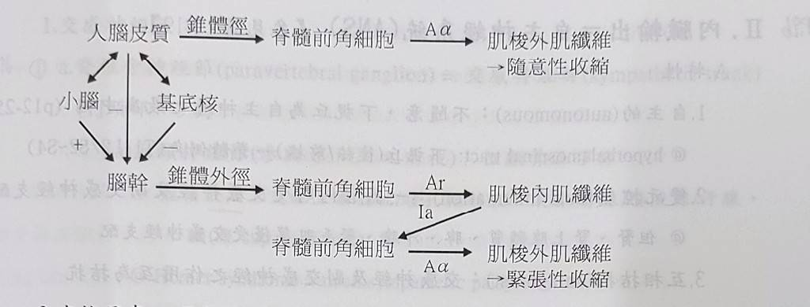

🧠 CNS+PNS-運動途徑(統整)
骨骼肌運動之調控
運動的計劃(planning)
- 計劃動作的區域：
- 大腦皮質聯絡區(cortical association area)：主要位於前額葉(prefrontal)
- 基底核：包括中腦黑質及底丘腦核
- 小腦：主位於小腦外側部(新小腦)
備註
是外側部不是後葉歐，有考過
- 丘腦-腹前核(VA)、腹外核(VL)：
- 負責將基底核、小腦等之運動訊息轉接至大腦皮質運動區(4)、前運動區(6)、額葉動眼區(8)
運動的執行(execution)
- 大腦皮質下降徑：錐體徑(pyramidal tract)
→隨意性收縮(產生隨意性運動)- 皮質脊髓徑(coticosinltct)：支配頸、軀幹、四肢的肌肉之隨意性收縮
- baby會先動軀幹(前皮質脊隨徑)；手指控制能力(側皮質脊隨徑)則較晚發展完成
- 皮質延腦徑(corticobulbar tract)：支配頭部肌肉之隨意性收縮
- 皮質脊髓徑及皮質延腦徑之神經元源自：
- 主要運動區(額葉；4)：主要支配遠端肌肉(精細運動)
- 前運動區&補充運動區(額葉；6)：主要支配近端肌肉(粗糙運動)
- 額葉動眼區(額葉；8)：主要支配眼球肌肉(目視搜尋)
- 體感覺區(頂葉；3-1-2)：主要協調一般感覺與運動的相互配合
- 扣帶回運動區等 [註：為緣葉、邊緣系統的一部分]
- 皮質脊髓徑(coticosinltct)：支配頸、軀幹、四肢的肌肉之隨意性收縮
- 腦幹下降徑：錐體外徑(extrapyramidal tract)
→緊張性收縮(以提供運動一穩定背景)- 紅核脊髓徑(rubrospinal tract)：交叉
- 四疊體(頂蓋)脊髓徑[colliculospinal(tectospinal) tract]：交叉
- 前庭脊髓徑(vestibulospinal tract)：不交叉
- 網狀脊髓徑(reticulospinal tract)：不交叉
- 紅核脊髓徑：經脊隨側索→主要調節遠端肌肉之緊張性收縮
- 四疊體脊髓徑、前庭脊髓徑、網狀脊髓徑：經脊髓前索→主要調節近端肌肉之緊張性收縮

運動的監控及矯正(monitoring & correction)：使運動順暢且精準
- 小腦
(前葉、舊小腦)：接受脊髓小腦徑傳入的無意識本體感覺(小腦半球內側/舊小腦)→與原計劃之動作比對，如執行有偏差則矯正調節之(小腦半球外側/新小腦) - 大腦(頂葉3-1-2區)：接受脊髓後柱(薄束、楔形束)→內側蹄系(本體、觸覺辨形)→丘腦皮質徑傳入的本體感覺，修正調節主要運動區及前運動區的運動指令
運動途徑整理表
| 名稱 | 起點 | 路徑 | 終點 | 交叉 | 功能 | |
|---|---|---|---|---|---|---|
| 錐體徑 (起點：大腦皮質) | 前皮質脊髓徑(15%) | 大腦皮質 (額葉等) | 同側前索 | 脊隨前角 (對側) | 於脊隨交叉 | ★[109-1]近端肌肉運動 (頸部、軀幹)；較快發展 |
| 錐體徑 | ★側皮質脊髓徑(85%) | 大腦皮質 (額葉等) | 對側前索 | 脊隨前角 (對側) | 於延腦交叉 | 遠端肌肉運動(最主要負責精細運動) 較慢發展 |
| 錐體外徑 (起點：腦幹) | 紅核脊髓徑 | 紅核 (中腦) | 對側側索 | 脊隨前角 (對側) | 交叉 | 遠端肌肉運動(粗大運動) 和大腦(額葉)&小腦(後葉)密切聯繫 →協調精細運動 ★[109-1]僅支配上肢屈肌(沒有下肢) |
| 錐體外徑 | 四疊體脊髓徑 (頂蓋脊隨徑) | 四疊體/頂蓋 (中腦) | 對側前索 | 脊隨前角 (對側) | 交叉 | 近端肌肉運動 和聽覺反射、視覺反射有關 →因應光線、聲音刺激而改變頭部姿勢 |
| 錐體外徑 | 網狀脊髓徑 | 網狀結構 (腦幹) | 同側前索 | 脊隨前角 (同側) | X | 近端肌肉運動 和一般感覺、睡眠醒覺、上下肢協調有關 中軸肌肉收縮 |
| 錐體外徑 | 前庭脊髓徑 | 前庭核 (腦幹) | 同側前索 | 脊隨前角 (同側) | X | 近端肌肉運動(負責緊張性收縮) ★★[109-1]主要刺激軀幹&肢體的伸肌(extensor)&抑制flexor 和內耳(前庭)&小腦(小葉結節葉)有關 →維持平衡 [hint：要站穩→是伸肌用力] 去大腦(decerebrate)僵硬 |
| 錐體外徑 | 縫核脊髓徑 (raphespinal) | 橋腦縫核 | 脊髓後角 | 與内生性止痛有關(5-HT) | ||
| 錐體外徑 | 下視丘脊髓徑 (hypothalamospinal) | 下視丘之 後核/前核 | 脊髓側角 | 與自主神經系統(ANS)有關 |
骨骼肌收縮之性質：隨意性及緊張性
- 肌肉張力中樞：位於腦幹
- →經錐體外徑，不斷興奮脊髓之γ運動神經元
- →骨骼肌之肌梭內(intrafusal)肌纖維收縮
- →造成肌梭(muscle spindle)伸張
- →肌梭感覺神經末梢(Ia)興奮
- →經伸張反射(stretch reflex)興奮α運動神經元
- →肌梭外(extrafusal)肌纖維收縮
- 直接興奮α運動神經元→造成隨意性收縮
- 先興奮γ運動神經元，再間接興奮α運動神經元→造成緊張性收縮
- 肌肉張力(muscle tone)：緊張性收縮的程度
- γ興奮↑ →肌肉張力↑；稱為痙攣(spastic=kypertonic)
- γ興奮↓ →肌肉張力↓；稱為弛緩(flaccid=hypotonic)
- 肌肉張力(muscle tone)：緊張性收縮的程度
- 去大腦(decerebrate)僵硬：大腦皮質及基底核抑制腦幹的運動途徑阻斷，致γ興奮↑ → 肌肉張力↑
- 尤其是前庭脊髓徑↑↑
